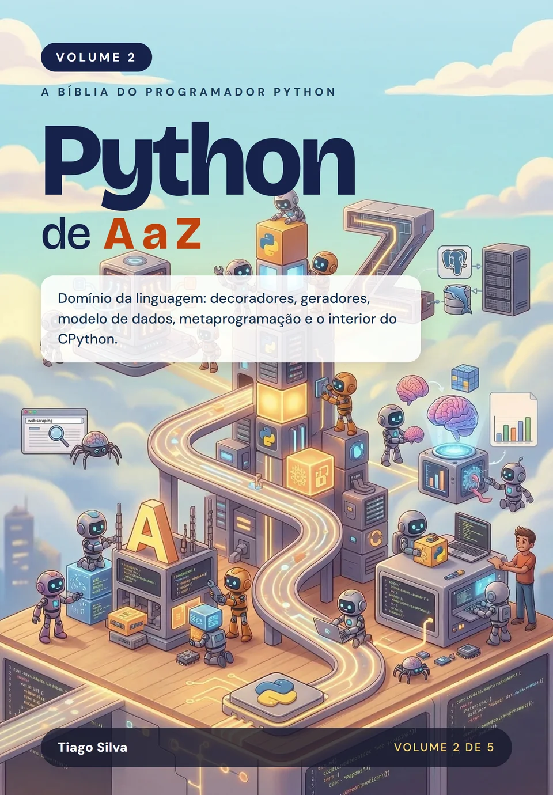

Python de A a Z: Domínio da linguagem
por Tiago Silva
O Python por dentro: o modelo de objetos, decoradores, geradores, orientação a objetos avançada e metaprogramação, para deixar de usar a linguagem no automático e passar a dominá-la.
- Páginas
- 568
- Idioma
- Português
- Publicação
- 10/2026
- Versão do Python
- 3.15
- Formatos
- Impresso e e-book (ePub)
Sobre este livro
Deixe de usar o Python no automático e passe a dominá-lo
Este volume é para quem já escreve scripts em Python, mas ainda não sabe explicar por que o código se comporta de certa forma. Aqui a caixa-preta se abre: funções como objetos, closures e decoradores, o sistema de imports, iteradores e geradores, como dicionários e conjuntos funcionam por dentro, referências, mutabilidade e coleta de lixo, tratamento de erros e gerenciadores de contexto, e o modelo de dados que faz um objeto se comportar como os tipos nativos.
Depois, orientação a objetos de verdade: herança e MRO, protocolos, properties, descritores, slots, dataclasses, metaprogramação, programação funcional e uma visão do CPython por dentro. Em vez de decorar regras, você entende o mecanismo que as explica, com o custo medido de cada escolha e exercícios com gabarito em todos os capítulos. Dois apêndices fecham o volume: as novidades de cada versão, do 3.8 ao 3.15, e as pegadinhas clássicas.
No mercado, é esse nível de domínio que aparece nas entrevistas técnicas e nas revisões de código: saber explicar por que um valor padrão mutável surpreende, quando usar um gerador, como funciona um decorador. É o que separa quem escreve Python que funciona de quem escreve Python que o time quer manter, e um passo decisivo para ser um especialista completo na linguagem.
Por onde começar
Se você nunca programou, comece pelo Volume 1. Se você já domina variáveis, tipos, if, match, laços, funções, coleções, texto e arquivos com pathlib (por exemplo, consegue escrever uma função que lê um arquivo, conta palavras em um dicionário e trata erros com try/except), pode começar direto por aqui, sem ler o Volume 1. Os cinco volumes formam a coleção completa, mas cada um se sustenta sozinho.
O que você vai aprender
- Tratar funções como objetos e escrever closures e decoradores
- Organizar código com módulos, pacotes e o sistema de imports
- Criar iteradores e geradores e entender dicionários e conjuntos por dentro
- Compreender referências, mutabilidade e a coleta de lixo
- Dominar o modelo de dados: sobrecarga de operadores, herança, MRO e protocolos
- Usar properties, descritores, slots e dataclasses com segurança
- Aplicar metaprogramação e programação funcional, e olhar por dentro do CPython
- Acompanhar o que mudou em cada versão, do Python 3.8 ao 3.15, e evitar 25 pegadinhas clássicas
Sumário
19 capítulos e 2 apêndices. Toque em um item para ver do que ele trata.
1Funções como Objetos de Primeira Classep. 41
2Closures e Decoradoresp. 75
3Módulos, Pacotes e o Sistema de Importsp. 115
4Iteradores e Generatorsp. 149
5Dicionários e Conjuntos por Dentrop. 185
6Referências, Mutabilidade e Coleta de Lixop. 207
7Tratamento de Erros e Exceçõesp. 247
8Context Managersp. 275
9O Modelo de Dados do Pythonp. 299
10Sobrecarga de Operadoresp. 319
11Orientação a Objetos Avançadap. 337
12Herança, MRO e super()p. 357
13Protocolos, Duck Typing e Classes Abstratasp. 377
14Properties, Descritores e slotsp. 397
15Dataclasses e Modelagem de Dadosp. 419
16Metaprogramaçãop. 441
17Programação Funcional: functools, itertools e operatorp. 463
18Estruturas de Dados Eficientes da Biblioteca Padrãop. 483
19O CPython por Dentrop. 503
ANovidades por Versão: do Python 3.8 ao 3.15p. 527
BPegadinhas e Erros Clássicosp. 545
Avaliações
O que os leitores dizem
Texto da avaliação.